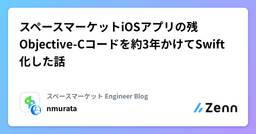
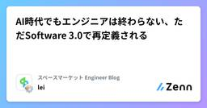
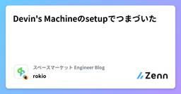

スペースマーケット Engineer Blogのフィード
https://zenn.dev/p/spacemarket
スペースを簡単に貸し借りできるサービス「スペースマーケット」のエンジニアによる公式ブログです。 弊社採用技術スタックはこちら -> https://www.whatweuse.dev/company/spacemarket
フィード

スペースマーケットiOSアプリの残Objective-Cコードを約3年かけてSwift化した話 1
1
スペースマーケット Engineer Blogのフィード
こんにちは、スペースマーケットでモバイルエンジニアをしている村田です。先日のWWDC25「Liquid Glass」の発表で世のiOSエンジニアが沸く中、我々のエンジニアチームは2025年6月16日ついにObjective-Cの撲滅を完了し、盛り上がっていました！昨今Objective-Cのコードが残っているプロジェクトは少ないかもしれませんが、入社してから約3年かけて取り組んできたSwift化の歩みを紹介することで、同じように移行に取り組んでいる方の励みや参考になれば嬉しいです。 スペースマーケットゲストiOSアプリの歴史 提供開始10年前の2015年6月30日、スペー...
5日前

AI時代でもエンジニアは終わらない、ただSoftware 3.0で再定義される 1
スペースマーケット Engineer Blogのフィード
2017年、元OpenAIの共同創業者であり、元テスラのAIディレクターでもある Andrej Karpathy は、自身のブログ記事で、「Software 2.0」という概念を提唱しました。彼の主張はこうです——「ソフトウェア開発とは、コードを書くことではなくなる。大量のデータを準備し、ニューラルネットワークを訓練することが、新しい“プログラミング”になる。」この考えは、当時としては新鮮で挑戦的でしたが、それからわずか数年で、私たちはさらにその先へと進んでいます。今年2月、Karpathyは再び、新しい人気キーワードを生み出しました。それが 「Vibe Coding」です。...
5日前
GASを使ってX（旧Twitter）に定期自動投稿してみた 1
スペースマーケット Engineer Blogのフィード
はじめにこんにちは。スペースマーケットでWebエンジニアをしているmotimoti63です。梅雨が明けて本格的な暑さがやってきましたが、皆さんちゃんと汗をかいてますか？最近、夏バテしないように筋トレを再開しました。というのも、下腹や横腹の脂肪が気になり始めたからです……。夏にナガスパに行く予定なので、それまでに「魅せる筋肉」を鍛えています。さて、本題です。最近、X（旧Twitter）で技術発信や情報収集をしようと思ったのですが、業務の合間に、みなさんが一番見てくれる時間帯である朝7時〜8時、夜7時〜8時に毎回ポストするのがなかなか大変で……。「どうせなら自動で投稿できたら...
6日前

Devin's Machineのsetupでつまづいた
スペースマーケット Engineer Blogのフィード
こんにちは！スペースマーケットのrokioです。DevinでDevin's Machineのセットアップをしているときに、The repository commands encountered an error or failed to complete within the time limit.というエラーに遭遇したので、その対処法を共有します！ 遭遇したエラーセットアップを開始すると以下のような画面になります：設定をして、Finishをクリックすると...エラー文が出て、セットアップを完了できませんでしたThe repository commands enc...
7日前

UI実装で遭遇する“あるあるバグ”とその解決方法
スペースマーケット Engineer Blogのフィード
こんにちは。みなさんUI実装していますか？実際のプロダクトでは小さなUI改善が多く、凝ったレイアウトや大規模なUI実装をすることはあまりないのではないでしょうか？今回私も久しぶりに業務で大規模なデザインリニューアル作業を行い特定のブラウザでだけ起こるバグやCSSの罠に悩まされました。なので、開発中に遭遇したUIバグとその時に取った解決方法をまとめたTIPS集を紹介します。 SafariでSVGがぼやける 現象<img src="xxx.svg"> でSVGを読み込んだところ、Safariでだけ画像がぼやけて表示される。期待する状態とぼやける状態を比べてみま...
10日前
【Terraform】FastlyのログをDatadogに送る
スペースマーケット Engineer Blogのフィード
こんにちは。株式会社スペースマーケットでWebエンジニアをしていますwado63と申します。最近LLMの性能が高まり、簡単な問題解決であればChatGPTなどに聞けば一発で解決してくれるので、ブログが書きづらくなったなと感じている今日このごろです。今回のケースも『terraformでfastlyのvclを管理しているのですが、datadogにログを連携するにはどうすればいいでしょうか。』とか聞けば8割ぐらいの精度の回答が返ってきます。とはいえつまづくところもあったのでその辺含めてまとめてみました。前提として、DatadogやFastlyのアカウントはすでに作成済み、Fastlyは...
10日前
Cursor x Claude Code = Vibes Coding = 俺いる...?🤔になった話。
スペースマーケット Engineer Blogのフィード
はじめに初めまして！株式会社スペースマーケットで内定者インターンに参加させていただいている、h4luです！最近、技術トレンドを追うためにオンラインイベントにちょこちょこ参加してまして、そこでAIエージェント、Cursorに関するイベントに参加しました。それがすごい刺激になりAIもっと触ってみたいなぁと思ってた時に、Claude CodeがProプランで使えてしまうというニュースも飛び込んできました。そういえば巷で噂のバイブコーディングやったことないなぁと思い簡単なAIアシスタントを作成してみましたので、その感想や得た学びを記事に起こそうと思います。この記事では、実際にAI...
16日前
【TypeScript】[1, 'a', 2] はどうして (string | number)[] になるの？
スペースマーケット Engineer Blogのフィード
最近社内で Effective TypeScript 第2版 を輪読しているのですが、型推論の話や型の拡大(widening)についての説明を読んでいて、「普段当たり前に使っている型推論ってどう動いているんだっけ？」とふと思い立ちました。TypeScriptコンパイラのネイティブ実装のニュースも記憶に新しいですが、気になったことは調べてみよう🕵️♀️ という気持ちで、TypeScriptの心臓部である checker.ts の世界へ旅立つことにしました。今回のゴールは、以下のコードがどのように (string | number)[] と解釈されるかを調べることです。const v...
17日前
SwiftUI標準のWebViewが出たので使ってみた
スペースマーケット Engineer Blogのフィード
はじめにこんにちは、スペースマーケットでモバイルアプリの開発をしている王です。最近やっているタスクが佳境になったり、登壇で色々準備したりでやや忙しくなりました。つい先日のWWDC2025を見まして、WebKit for SwiftUIで紹介されたSwiftUIのWebViewがちょっと気になったので使ってみました！ これまでの話まず今回の標準WebViewが出る前に、SwiftUIでどうやってWebViewを表示するか簡単に振り返ってみようと思います。struct WebView: UIViewRepresentable { let url: String ...
17日前
B/Gデプロイでバージョンを上げたDBを切り戻す際に、DMSのレプリケーションを試してみた
スペースマーケット Engineer Blogのフィード
こんにちは！僕が所属してるチームでは、DBのアップデート対応を行っています。まだ本番では対応できていないですが、DMSのレプリケーション機能を使った切り戻し方法をリハーサルで使ってみたので、手順や使ってみた所感をまとめていきたいなと思います。今回アップデートするDBの環境です。対象エンジンバージョン現状Aurora MySQL(5.7)2.11.2アップデート後Aurora MySQL 3.08.2(compatible with MySQL 8.0.40) 背景データベースをB/Gデプロイでアップグレードした際に、万が一元のバージョンに戻...
23日前
BigQueryで「今から3ヶ月前より後」のデータを取得する
スペースマーケット Engineer Blogのフィード
どうも！スペースマーケットのrokioです！BigQueryで「今から3ヶ月前より後」という条件でクエリを書きたくなり、そこで色々考えたので記事にしてみます！ 「3ヶ月前」の定義今日が2025/6/15だとしたら、3ヶ月前とは何日のことでしょうか？(a) 月の部分だけ-3した、2025/3/15でしょうか？(b) それともざっくりと30 x 3 = 90日前でしょうか？3/15は6/15の92日前です。要件は状況によって異なると思いますので、上記2パターン(a)(b)を実現するクエリをそれぞれ考えることにします。 前提以下の前提で話を進めます。us...
24日前
Context7 MCPで実現する最新ドキュメント参照術
スペースマーケット Engineer Blogのフィード
はじめまして！スペースマーケットのjinです🤓Windsurf、Cursor、GitHub CopilotなどのAI付きIDEをお使いの皆さん、@Docs機能は活用されていますか？便利な機能ではあるものの、個人的には@Docsを使っても古いライブラリの情報が出力されたり、ハルシネーション（事実とは異なる情報の生成）が発生したりすることがありました。また、その都度参照してほしいドキュメントを指定するのも、少し手間に感じていました。今回は、これらの課題解決の助けとなる「Context7」というMCPをご紹介します。 Context7 MCPとは？Context7 MCPは、A...
25日前
Next.js + ClerkでログインしたユーザーをRailsバックエンドで認証・検証する方法
スペースマーケット Engineer Blogのフィード
初めまして！スペースマーケットでインターンをしている@aki_apintです！今回は、Next.js × Clerk のログインは簡単にできたけど、「Rails側で、Clerkユーザーってどう取得するの？」って話。個人開発で使っている Next.js + Clerk + Rails の構成。フロントのClerkは一瞬で導入できたのに、バックエンドのRailsとどうつなぐかでめちゃくちゃハマりました。同じように「Clerk、簡単そうなのにRailsとどう連携するの？」と悩んでいる人に向けて、連携の仕組みと、実際に僕が実装した構成をまとめました！少しでも助けになれれば嬉しい...
1ヶ月前
複数Firebaseプロジェクト対応！Flutterの環境別構成ファイル管理
スペースマーケット Engineer Blogのフィード
はじめにこんにちは、スペースマーケットでモバイルアプリの開発を楽しんでいる王です。最近気温変化が激しく風邪気味ですが、皆さんも体調管理しっかりしましょう。弊社のホスト向けアプリ「SPACEMARKET for HOST」はOAuth認証の技術負債返却において、環境ごとに複数のFirebase Projectを追加する必要がありました。今回は環境ごとに複数のFirebase Projectを切り替える方法について紹介したいと思います。 環境Flutter 3.13.9Dart 3.1.5 本記事で紹介しないことFirebaseコンソール上の設定 開発...
1ヶ月前
nDCGを2つのランキングが変わらないことの確認に使ってみた
スペースマーケット Engineer Blogのフィード
はじめにみなさんElasticsearch触っていますか？検索ランキングに変更を加えた際に、ランキングの変わり具合が大きいものを探したいことありますよね？定性的に探すと時間がかかるし精度が低い。差異を定量的に表現して大きく変わっているものを探したい時にどんな指標を使えば良いのか考えてみたいと思います。 ランキングの差異を知るにはどんな評価指標がよいか？今回のケースでは、3点を選定基準としました。ランキング全体ではなく、上位の方で評価したい検索結果が数万件のクエリに対して全件計算すると計算コストがかかるため変更前後のランキングで共通じゃない要素が入ることを許容...
1ヶ月前
supabase × Auth0でLINEログインを実現し、RLSで安全にデータを扱う方法
スペースマーケット Engineer Blogのフィード
どうも、LIFFアプリの構築時に「お。認証機能もあるやん」ってことでsupabaseを選んだものの、LINEログインに非対応だと後になって知り頭を抱えた人です。カカオトークは あるけれど LINEの認証は見だごとァ 無ェ！ということで、supabase × Auth0でLINE認証を実現しつつ、Row Level Security（RLS）で安全にユーザーデータを扱えるようにしたので、その実装をまとめておきます。 前提知識のおさらい supabaseの認証についてhttps://supabase.com/docs/guides/authsupabaseにはありがたいことに...
1ヶ月前
localhostをiPhoneで確認する方法
スペースマーケット Engineer Blogのフィード
こんにちは、スペースマーケットのWebエンジニアのShotaです。今回はlocalhostをiPhoneなど別のデバイスで確認する方法をご紹介します。 方法以下の手順で開発中のPCのローカルサーバー(今回はポート3000番)に別のデバイスからアクセスします。ローカルサーバーが起動しているか確認するhttp://localhost:3000/を開発中のPCで開けることを確認します。開けない場合はローカルサーバーを起動しましょう。Next.jsを使用している場合のコマンドnext dev -H 0.0.0.0Macのターミナルで以下を入力ipconfig get...
1ヶ月前
ア。ーAlexaの運動についてー
スペースマーケット Engineer Blogのフィード
はじめにどうもー。スペースマーケットの異端審問官、ソヴァクです。最近Alexaを買いまして、これがとても良くて、もう私の家はアレクサを中心に回っています。https://www.amazon.co.jp/dp/B09B2RLPLV?ref=MARS_NAV_desktop_hyp&th=1家を中心にAlexaが回っているのではないので、異端思想には気をつけてくださいねーもうすっかり夏ですねー☀️夏になると何が1番困るかわかります？....答えは暑さです結局そういうシンプルなのが1番困るらしいですよそんな夏でもすぐに部屋を涼しくできるように、今回はAlex...
1ヶ月前
Conventional Comments それは コードレビューがみた光
スペースマーケット Engineer Blogのフィード
おはようございます、こんにちは、こんばんは。スペースマーケットでWebエンジニアをしているs0arです。Switch2抽選落ちました。意外と周りに当たってる人がいてびっくりしてます。あんなもん普通の人間に当たるわけがないんだよなあ？当たった人は任天堂に何を差し出したんですか？ あなたはコードレビューが好きですか？あーしはけっこうすきかも〜（ギャル真似クソジジイ）他の人が書いたコードから「こういうのもあるのか」っていう勉強になったりするし読めば読むほどどんどん知識と経験値が蓄積されていくので大チャンスだと思っています。だからどんどんやっていきたいしみんなもやろうぜ！コ...
2ヶ月前
【Day.js】React+Day.jsで簡単にカレンダーコンポーネントができた話（Day.jsの基本メソッドの紹介もあるよ）
スペースマーケット Engineer Blogのフィード
こんにちは！スペースマーケットでフロントエンドエンジニアをしているwharaguchiです。今回は、Day.jsを使ってカレンダーコンポーネントを作成したところ、とても簡単に作ることができたので、そちらを紹介したいと思います。 今回のゴール今回のゴールは以下の仕様を満たしたカレンダーコンポーネントです。前月・次月の移動ができる表示している月に応じてカレンダーの表示内容を変更する日曜日始まりのカレンダーを作成し、不足している情報を前月、次月から補完する実際のコードと画面も用意しているので、そちらも併せてご確認ください。https://github.com/wh262...
2ヶ月前